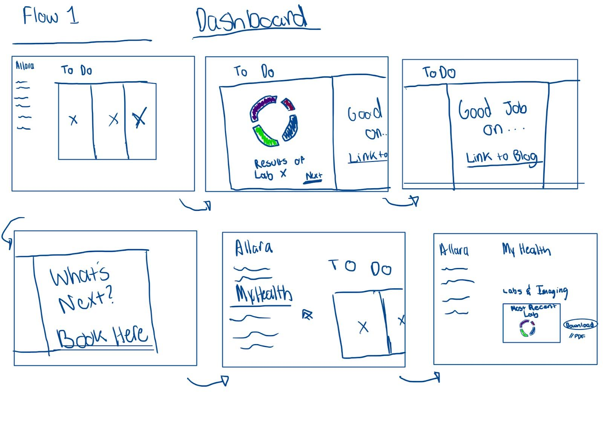
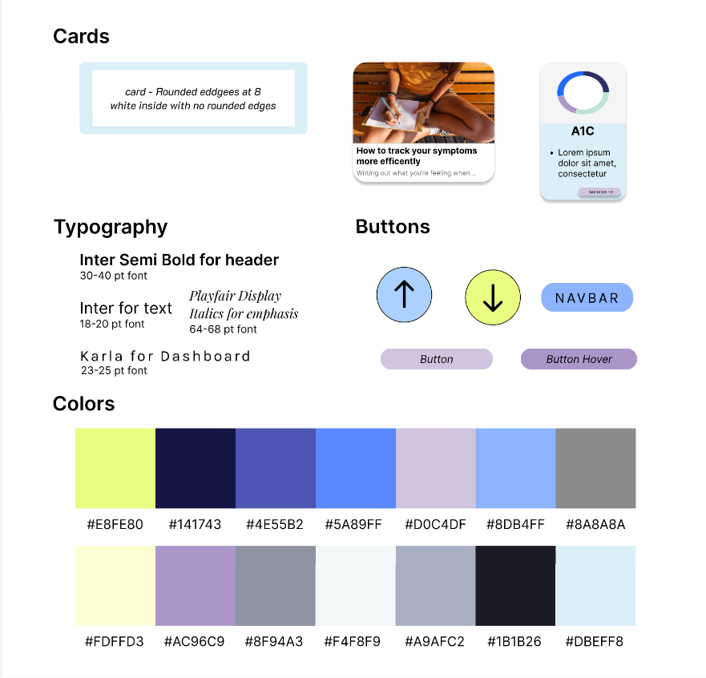

<!-- TO RUN IN BROWSER:
    1. Install vscode extension Name: open in `browser open-in-browser` by TechER
    2. Right click html file and either run in default browser or another browser
  -->

<!DOCTYPE html>

    <!-- Required meta tags -->
    <meta charset="utf-8" />
    <meta name="viewport" content="width=device-width, initial-scale=1" />

    <!-- Bootstrap CSS -->
    <link
      rel="stylesheet"
      href="https://cdn.jsdelivr.net/npm/bootstrap@4.3.1/dist/css/bootstrap.min.css"
      integrity="sha384-ggOyR0iXCbMQv3Xipma34MD+dH/1fQ784/j6cY/iJTQUOhcWr7x9JvoRxT2MZw1T"
      crossorigin="anonymous"
    />

    <!-- Optional JavaScript -->
    <!-- jQuery first, then Popper.js, then Bootstrap JS -->
    <script
      src="https://code.jquery.com/jquery-3.3.1.slim.min.js"
      integrity="sha384-q8i/X+965DzO0rT7abK41JStQIAqVgRVzpbzo5smXKp4YfRvH+8abtTE1Pi6jizo"
      crossorigin="anonymous"
    ></script>
    <script
      src="https://cdn.jsdelivr.net/npm/popper.js@1.14.7/dist/umd/popper.min.js"
      integrity="sha384-UO2eT0CpHqdSJQ6hJty5KVphtPhzWj9WO1clHTMGa3JDZwrnQq4sF86dIHNDz0W1"
      crossorigin="anonymous"
    ></script>
    <script
      src="https://cdn.jsdelivr.net/npm/bootstrap@4.3.1/dist/js/bootstrap.min.js"
      integrity="sha384-JjSmVgyd0p3pXB1rRibZUAYoIIy6OrQ6VrjIEaFf/nJGzIxFDsf4x0xIM+B07jRM"
      crossorigin="anonymous"
    ></script>
    <script src="carousel.js"></script>

    <!-- Font Awesome -->
    <link
      href="https://cdnjs.cloudflare.com/ajax/libs/font-awesome/6.0.0/css/all.min.css"
      rel="stylesheet"
    />
    <!-- Google Fonts -->
    <link
      href="https://fonts.googleapis.com/css?family=Roboto:300,400,500,700&display=swap"
      rel="stylesheet"
    />
    <!-- MDB -->
    <link
      href="https://cdnjs.cloudflare.com/ajax/libs/mdb-ui-kit/6.0.1/mdb.min.css"
      rel="stylesheet"
    />

<nav class="navbar navbar-expand-lg">
    <a class="navbar-brand" href="index.html">Marleni Angel</a>
    <button
      class="navbar-toggler"
      type="button"
      data-toggle="collapse"
      data-target="#navbarSupportedContent"
      aria-controls="navbarSupportedContent"
      aria-expanded="false"
      aria-label="Toggle navigation"
    >
      <span class="navbar-toggler-icon"></span>
    </button>

    <div
      class="collapse navbar-collapse ms-5 justify-content-right text-center"
      id="navbarSupportedContent"
    >
      <ul class="navbar-nav">
        <li class="nav-item active text-center">
          <a class="nav-link" href="index.html"
            >PROJECTS <span class="sr-only">(current)</span></a
          >
        </li>

        <li class="nav-item">
          <a
            class="nav-link"
            href="https://docs.google.com/document/d/175UqJwggJ5qAAgrnpTEqpRgmo-J5yq0QC6M9GGeu1mU/edit?usp=sharing"
            >RESUME</a
          >
          <li class="nav-item">
            <a
              class="nav-link"
              href="artwork.html"
              >ARTWORK</a
            >
  </nav>

<html lang="en">
  <head>
    <meta name="viewport" content="width=device-width, initial-scale=1.0" />
    <title>Responsive Redesign Writeup</title>
    <!-- import CSS styles -->
    <link rel="stylesheet" href="iterative-design-styles.css" />
  </head>

  <body>
    <header>
      <h1>Iterative Design</h1>
    </header>

    <br />
    <br />

    <h2>What is this?</h2>
    <p>
      This project was work done for an assignment in CSCI1300 - UI/UX at Brown
      University.It was meant to be a culmination of design work from the
      course, doing so in the context of working with project teams and industry
      startups. This project was a combined effort by Marleni Angel, Connor
      Flick, Isabelle Meza, and Destiny Wilson.
      <br />
      <br />
      For this project, we were working with
      <a href="https://www.allarahealth.com/">Allara</a>, a health service
      targeting women looking to better manage chronic health conditions. Our
      task was to find ways to integrate data visualizations from labs into the
      preexisting user dashboard.
    </p>

    <br />
    <br />
    <h2>Process</h2>
    To do this, each team member independently produced various sketches showing
    different potential flows through the website.

    <p>Sketches:</p>
  <div class="image-container">
    
    
    
    
  </div>
    <br />
    <br />
    <p>
      We also took time to notate the project brief that we had been provided to
      better ascertain the focus and goals of the project,
      <a
        href="https://docs.google.com/document/d/1fgRs02u-mv-TC_2NcM64tWmEjOxtQMotdNiLH9zKUak/edit?usp=sharing"
        >which is linked here.</a
      >
    </p>

    <br />
    <br />
    <p>
      With sketches in hand, we came together to discuss shared and differing
      ideas between our flows, looking to develop a first pass at approaching
      data integration and visualization.
    </p>
    <div class="image-container">
      
    </div>
    <br>
    <p>
      To guide our work, we relied on the brief that we had been given at the
      start of the project. Part of the users’ “pain points” reference being
      overwhelmed by lab data. We were imagining addressing this through an
      “at-a-glance” view on the dashboard for a small number of prioritized
      visualizations that users might be interested in, containing a mix of both
      successes and to-dos. To do this, we decided on sectioning off the
      “at-a-glance” to the right of the dashboard while incorporating the card
      views that we noticed were a trend in all of our hand-drawn sketching
      visualizations. In the end, based on our sketches, we decided on three
      main sections: “To-Do”, “Appointments” and “At-a-glance” for our first
      iteration wireframe. We felt that a simplified view of their dashboard
      with small visualizations relating to labs or when to book their next
      appointment would address the patients’ main pain point.
    </p>

    <br />
<div class="image-container">
    
    
    
  </div>

    <br />
    <br />
    <h2> Initial Feedback: What went wrong?</h2>
    <p>
      With the first wireframe complete, we turned to our classroom peers and
      our point-of-contact at Allara to provide some much needed advice as to
      how to improve upon our design. 
    </p>
    <p>
      Starting with our peers, during our critique studio, we received feedback
      on incorporating more visuals to make the website feel more friendly.
      People believed that the design of the desktop made them think of a
      hospital, which we presumed to be negatively connoted. Others critiqued
      the general organization of the data visualizations and mentioned that
      having a separate pop-up page would be helpful.
    </p>
    <p>
      Our client, after watching our Loom video walking through the lo-fi
      wireframe, expressed concerns about data integration into the primary
      dashboard and a want to focus more on the lab results given by healthcare
      providers. In particular, there was a described need to shift data
      visualizations towards the less-used pages of the website, promoting user
      exploration throughout the page.
    </p>

    <br />
    <br />
    <h2>Solution</h2>
    <p>
        We decided that the primary goal of our design was decision-making. The
        underlying pain point of medical data is that it is often thrust upon
        someone, often making them feel powerless and out of control with respect
        to their own health. As such, we wanted to introduce artificial choices to
        allow users to feel some control while they went through their data,
        anticipating likely questions and next steps as they examined their own
        information. Beyond this, we also thought to include buttons for settings
        and backtracking within the flow, further allowing users to feel empowered
        as they always had an option to adjust, ignore, or recall the data that
        they’re seeing.
      </p>
      <p>
        In terms of layout, we sought to utilize white space and muted tones,
        allowing the user to never feel rushed or that they were ever bombarded
        with more than one piece of content and one choice at a time. In essence,
        while we wanted decision-making to be centered, we also sought to avoid
        introducing decision paralysis. Beyond this, the broad white space also
        allows for a natural separation of elements, allowing for branches to
        naturally develop on the page and for larger graphs and choices to take up
        a majority of the page without feeling cramped. The tree structure also
        invokes a familiar metaphor for users of all backgrounds, as the primary
        content stays along the central “trunk” of the tree while options or
        superfluous elements may branch out towards their respective leaves.
        Further, the introduction of choices in this guided view allows for some
        small amount of gamification, as users may be inclined to discover and
        play around with different options and choices and “collect” all the
        possible pathways and information related to their data.
      </p>

    <h4>
      <a
        href="https://www.figma.com/file/IiGP9TEJ3IYAHsIK1Kvw6T/Wireframes?type=design&node-id=0%3A1&mode=design&t=oPlXzdxRlTETyufW-1"
        >Major Figma Link That's Hard To Miss!</a
      >
    </h4>
    <br>
    <br>
    <h3> Style Guide</h3>
    <div class="image-container">
      
      </div>


    <br />
    <br />
    <h2>Learnings and final feedback</h2>
    <p>
      The feedback we were given was exceptionally helpful and thoughtful, and
      we appreciated being able to work with Allara on this project.
    </p>
    <p>
      As we created separate desktop and mobile flows in our design, we received
      independent feedback on both. For desktop, there was particular
      appreciation for the storytelling aspects and prioritization of agency and
      guidance, doing so without making a user feel lost in the flow. However,
      there were concerns that the design that we proposed would not be
      sufficient for returning users to the site. An experienced user who knows
      their data well and wants to quickly access it would not want to
      constantly walk through a guided process, and our design failed to account
      for this need. A user should, at some point, be able to “see everything.”
    </p>
    <p>
      For our mobile view, we opted for a more “story-like” flow, which was
      appreciated for new users, but was also noted as being a potential problem
      for returning ones in a similar manner to the desktop flow. There was also
      a note about potentially converting the mobile flow to be closer to the
      web flow, allowing both to use the tree structure and vertical scrolling
      to navigate, emulating a more natural reading view. Between both the
      mobile and desktop views, there was positive feedback on the styling and
      color choices we had selected, noting that the look of both designs felt
      enjoyable and fun, but remained clean throughout.
    </p>
  </body>
</html>
